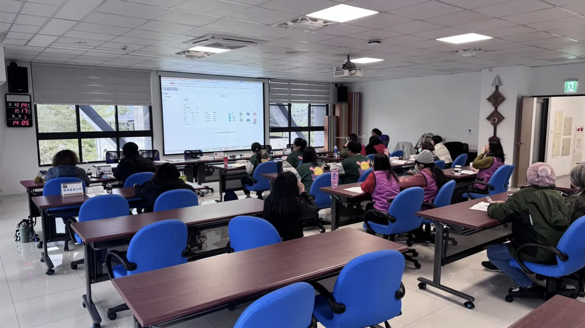

工作經歷
喬思齊科技/被投資資料庫建置案
專案助理-專案經理
2024年10月 - 2025年04月
在這個專案中，我規劃此資料庫建置項目，領導跨功能團隊，成功推動重要模組的交付。透過有效的溝通和協調，提升了團隊效率，並獲得了客戶的高度評價。
專案背景與痛點：
成果與效益：
- 實現資料集中管理：將各模組功能串聯，建立統一、高效的被投資事業資料庫，大幅提升數據彙整與查詢效率。
- 減少人工作業與錯誤風險：透過系統提供即時、正確且可視化的資料彙整與報表輸出，顯著降低人工操作與錯誤機率。
- 強化流程可追溯性與透明化：改善案件與經費流程追蹤機制，提升進度透明化，加速管理決策。
- 改善不同投資單位管理與績效追蹤：提升經費管理效率，為投資決策提供更可靠的數據依據。
系統規劃與需求定義：
- 與客戶進行需求訪談，並將其轉化為清晰的被投資事業資料庫系統功能規格，強化不同投資事業單位專案管理與績效追蹤。
- 深入定義不同投資事業單位管理功能，包含案件分類、即時追蹤、多筆履約進程管理及文件上傳等
- 規劃績效管理模組的數據計算邏輯與自動產出績效表格功能，支援資料篩選、排序與匯出 (Excel/PDF)，顯著提升數據分析效率。
- 協助協調預算管理功能，定義費用計算規則，並規劃預算視覺化呈現，以支援決策。
- 協助規劃多層級使用者權限管理，確保資料安全與操作範圍清晰。
數據與流程優化：
- 設計繳交排程設定，規劃履約進度與文件提交通知，提升效率與合規性。
- 參與數據流向設計，確保關鍵數據在系統內部的準確傳遞與整合。
專案管理與協作：
- 作為專案經理，協調業務與技術團隊，確保專案進度符合預期。

進行需求訪談
喬思齊科技/企業資源規劃(ERP)系統導入專案
專案助理-專案經理
2024年7月 - 2025年7月
在此跨部門 ERP 系統導入專案中，負責進銷存與收付款流程轉換與系統功能實現，有效協調各方資源，確保核心模組順利上線，提升企業營運流程完整性。
專案背景與痛點：
進銷存、收付款流程手動操作多、效率低；缺少庫存管理，影響管理決策；問題排除仰賴人工追溯，耗時費力。
成果與效益：
- 實現流程自動化與標準化：大幅減少人工操作錯誤，提升整體作業效率。
- 提升數據即時性與準確性：統一數據平台，提供管理層更可靠的即時營運數據，加速決策。
系統規劃與需求定義：
- 負責進銷存與收付款流程的規劃與系統設計，深入分析現有作業流程，並將其轉換為標準化的系統邏輯與功能需求。
- 主導需求分析工作，識別業務痛點與效率瓶頸，並設計符合企業的解決方案。
- 參與數據流規劃，確保各業務環節數據的準確輸入、處理與傳遞。
系統實施與品質保證：
- 積極參與關鍵系統測試環節(UAT)，驗證進銷存及收付款流程在系統中的數據與邏輯計算準確性，確保系統功能符合預期。
- 提供使用者教育訓練與技術支援，協助各部門成員熟悉ERP系統操作，確保系統順利導入與有效運行。
- 負責系統問題排除與改良建議，針對系統運行中遇到的流程或功能問題，提供解決方案並協調開發實施，持續提升系統效能。
專案管理與協作：
- 作為業務與技術團隊間的橋樑，推進專案進度並解決跨部門合作中的溝通挑戰。
喬思齊科技/傳統技能競賽資訊管理系統
專案經理
2025年1月 - 2025年5月
在這個競賽資訊管理系統建置專案中，我擔任專案經理，負責統籌需求梳理、功能設計與嚴格的數據驗證，確保系統在高流量活動期間穩定運行，為活動成功提供堅實的數據支持。
專案背景與痛點：
此系統建置前，競賽報名與成績管理多仰賴人工紙本作業，導致效率低下、數據易出錯，且現場成績發布與獎狀製作耗時費力，需要有效的解決方案來提升賽事管理效率與數據準確性。
成果與效益：
- 提升報名效率與數據準確性： 實現線上報名與數據自動化管理，顯著降低人工錯誤與處理時間。
- 加速成績處理與結果發布： 透過系統快速計算與發布成績，並自動生成獎狀，大幅減少人力負擔。
- 優化賽事體驗： 提供即時、便捷的資訊查詢與管理功能，提升參賽者與工作人員的滿意度。
系統建置與需求梳理：
- 協助從無到有建置競賽資訊管理系統，並詳細說明系統前台與後台功能，包含首頁、大會資訊、公告、競賽資訊、服務資訊、報名系統、競賽成績及系統登錄等。
- 與客戶溝通並詳細梳理了競賽報名、成績管理、以及獎狀列印等複雜需求，確保所有功能符合賽事管理需求。
功能測試與數據驗證：
- 主導系統功能測試，親自驗證報名資料與成績數據的錄入、計算及顯示是否準確無誤，確保前台與後台各項功能如期運作且數據可靠。
- 確保系統能準確維護報名資料、成績數據 (即時成績、錦標統計、決賽成績、獎狀列印)、使用者及群組權限等核心數據。
使用者服務與文件：
- 支援系統操作手冊編寫與使用者培訓，大幅提升系統採用率與使用者滿意度。
- 在競賽期間提供現場技術支援，確保系統穩定運行。

系統教育訓練照片